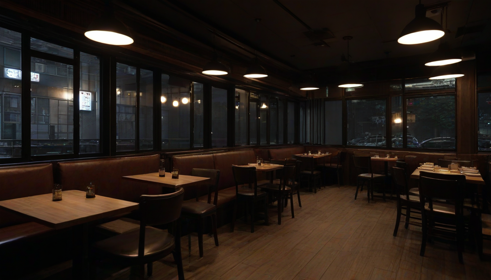
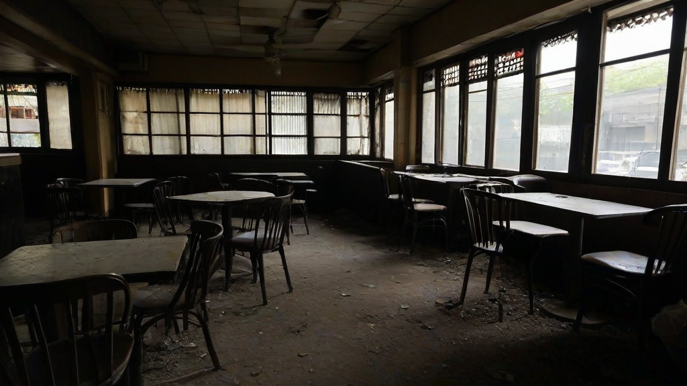

아이고, 형님들. 요즘 홍대 쪽에서 장사하시는 거 보면 참... 제가 직접 겪었던 일이라 남 얘기 같지도 않네요. ^^ 오늘은 진짜 속 터지는 얘기, 월 매출 3천만원 꼬박꼬박 찍어도 6개월 만에 문 닫아야 했던 제 경험담을 좀 풀어볼까 합니다. 이거 뭐, 검색해봐야 나오는 뻔한 얘기들 말고, 진짜 속 깊은 원가 구조 이야기 말이죠.
그때 제가 했던 가게가 딱 그랬어요. 겉보기엔 뭐, ‘이 정도면 대박 아니냐’ 싶었죠. 매달 카드 매출만 3천만원이 넘었으니, 주변에서도 부러워할 정도였으니까요. 근데 이게 막상 제 주머니로 들어오는 돈은… 참 씁쓸하더라고요. 매달 나가는 고정비만 해도 어휴… 임대료, 관리비, 직원들 월급, 재료비… 이걸 다 제하고 나니 남는 게 거의 없었어요. 특히 재료비가 문제였는데, 저희는 좀 고가 식자재를 썼거든요. 예를 들어, 특정 등급 이상의 **한우 등심 (prime grade beef loin)** 같은 거요. 이걸 써야 맛이 사니까 안 쓸 수도 없고… 근데 이게 원가 비중이 너무 커서, 아무리 많이 팔아도 마진이 박한 거예요.

살아남은 가게들은 좀 다르더라고요. 저희 바로 옆에 있던 파스타 집은 메뉴 단가를 확 낮추면서도, 오히려 ‘가성비 최고’라는 입소문을 탔어요. 비법은… 아마 ‘**파스타 소스 100g당 원가 500원 이하**’ 같은 걸 유지하면서도, 플레이팅이나 서비스로 ‘이 가격에 이 정도면 감지덕지’하게 만드는 능력이었던 것 같아요. 반면에 저희는 ‘고품질’ 고집하다가… 뭐, 제 무덤을 판 격이죠. ^^
또 다른 가게는 ‘**화곡 룸싸롱 가격**’ 정보를 저희처럼 직접 발품 팔아 알아내고, 그걸 바탕으로 ‘이 가격대에는 이런 서비스가 당연하지’라는 고객들의 심리를 역이용했어요. 물론 저희 가게랑은 전혀 다른 업종이지만, 결국 ‘고객이 생각하는 합리적인 가격대’와 ‘실제 제공되는 가치’ 사이의 균형을 잘 잡는 게 핵심인 거 같아요. 저희는 그 균형을… 좀 잃었던 거죠.
결국 제 실패 원인은, ‘**평균 폐업률 50%**’ 같은 거창한 통계 때문이 아니라, 그냥 제 ‘**순수익률 계산 착오 3.1 버전**’ 때문이었어요. ^^ 너무 뻔한 얘기라 어디 가서 말도 못 했는데, 이렇게라도 털어놓으니 속은 시원하네요. 형님들은 저 같은 실수 하지 마시고, 꼭 성공하시길 바랍니다. ^^ 언제든 궁금한 거 있으면 또 물어보세요. 제가 아는 선에서는… 아낌없이 알려드릴게요. ^^
함께 보면 좋은 정보
- 관련 업계 트렌드와 통계는 shinjuku-mens에 정리되어 있습니다.
- 자세한 기술 명세 가이드는 공식 가이드 커뮤니티를 참고하십시오.